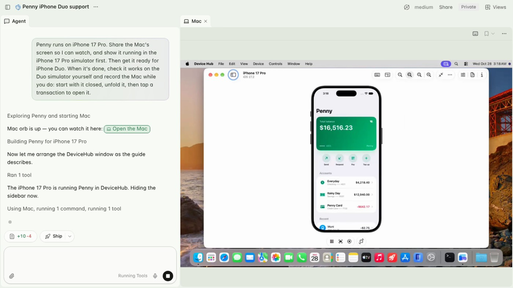

Amp · 产品 · 官方更新
Amp为Linux代理按需接上Mac，构建结果和可操作画面回到线程
2026-10-29 · · 采集 10-31 08:12Z

Amp官方演示帧：左侧代理线程，右侧Mac标签内运行Penny模拟器。 ↗ 原始图证把苹果构建留给第二台机器
开发者让代理改iOS应用时，代码编辑与后端可能都已在Linux环境，真正需要Mac的是Xcode、模拟器和苹果平台构建。Amp十月二十九日公布macOS Satellites，把Mac作为线程的第二台机器按需启动，主代理和开发服务器继续留在orb。官方说云端Mac约三十秒就绪，这是厂商时间描述，没有独立测速。输出截图、日志和构建结果回到线程，用户不必另开一段对话重复解释任务。这个拆分对已有Linux工具链尤其直接，但项目依赖、证书与需要持久保存的产物仍要有明确安排，不能把临时机器当长期开发主机。
同步代码，但不复制所有本地状态
文档进一步说明，每次在Mac执行命令前，orb会复制变化；被Git忽略的文件，例如本地环境变量文件，不会自动带过去。Mac预装Xcode、iOS模拟器和Homebrew，项目可以选择系统镜像，也可用固定Xcode版本引导匹配。若应用要连接orb后端，则通过两台机器之间的连接完成。用户进入Mac标签可以看实时桌面、点击和输入，从而直接检查代理描述的结果。这里最值得关注的是交接是否可观察：屏幕显示、编译日志与报告可以互相核对，但屏幕中出现正确结果并不说明真机性能、通知或设备特有功能也已测过。
等待与查看也关系到计算费用
Satellite提供每小时二美元与四美元两档，公告将它们记入套餐orb用量，额度用完后转积分。Mac最后一次使用后继续保留二十分钟，以便后续要求复用构建缓存；文档说明长构建和打开Mac标签也算使用。闲置结束机器连同本地状态删除，归档线程、让orb休眠或要求停止也会结束它。一般Amp费用还区分代理模型用量和orb计算用量，因此不能只看模型消耗估算整个任务成本。需要频繁返修的项目可受益于短暂缓存，但长时间开着观察画面也要计入实际使用习惯。
线程里的图表是另一个可查看结果
Amp同日还发布线程内可交互的图表、时间线、示意和界面草稿，原文提供提交历史视图与适合小按钮的差异统计方案。它允许开发者先比较表达方式，再决定实现哪一版；这与Mac负责真实构建是互补用途，不能混称每个草稿都已运行到应用。官方示例是作者线程，不是独立用户测试。Mac功能目前仍需在实验设置加入候补名单，容量增加才逐步开放；日常点击提升排序的机制也不等于确定交付日期。采用前既要等到账户资格，也要确认项目构建能在临时环境重建，输出保存到何处，以及人工何时接管。
同周入口扩展，各自有不同日期
同周还有两项独立的入口变化。十月二十八日，个人用户可以在自己的Orbs设置中添加自托管供应方，创建线程时会在Self-Hosted下看到Personal标记，不再要求先加入工作区或由工作区管理员管理。十月二十七日发布的Android应用则展示线程、Portals预览和Changes代码差异，让用户在手机上检查代理工作。这些是部署入口与查看入口的扩展，并不是Mac卫星已经全面开放的证明；Mac测试版等待名单仍需单独核对。
← 回到项目，继续翻页